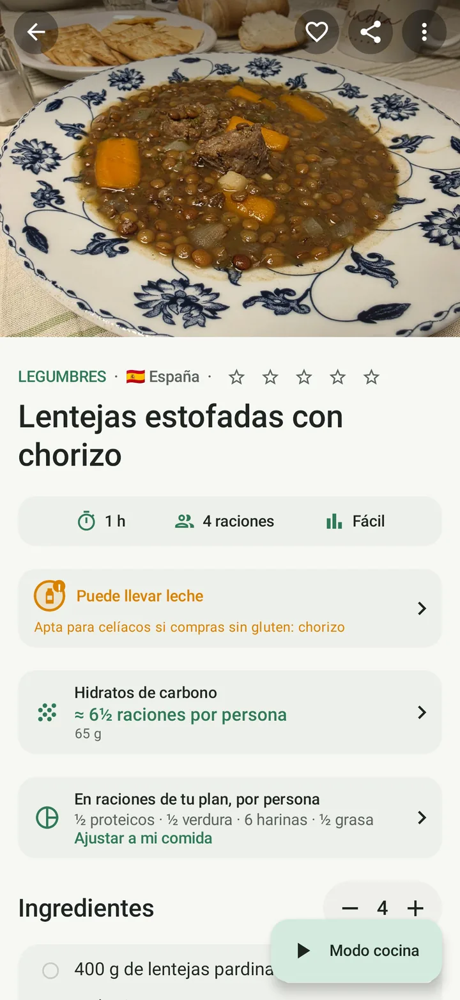
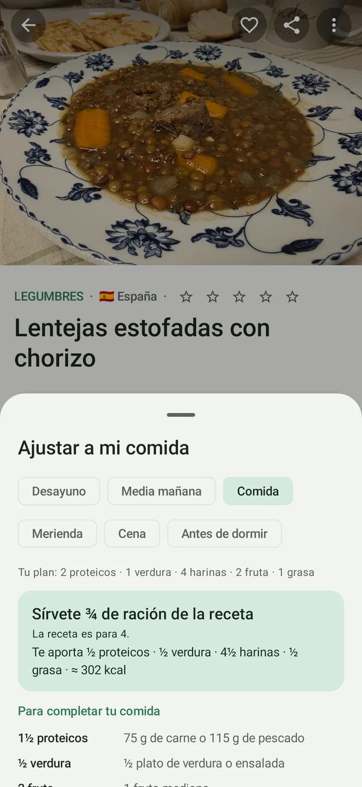
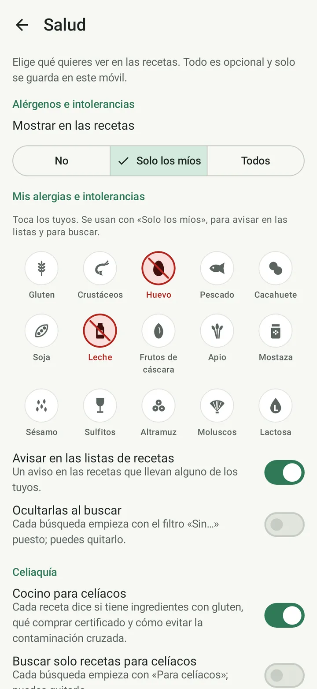
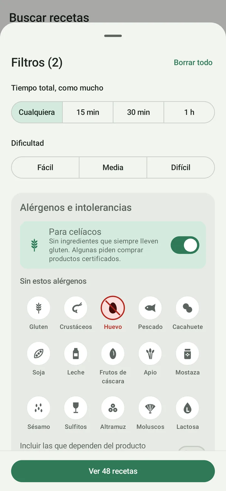

Salud · Opcional
Alérgenos, celiaquía y raciones de hidratos
Miga lee los ingredientes de cada receta, sin el asistente y sin conexión, y te dice lo que importa para tu familia.
- 14 alérgenos y lactosa: los que la ley europea obliga a declarar. «Contiene» o «Puede contener» según el producto que compres, con la explicación al tocar el aviso.
- Solo lo tuyo: todos los alérgenos, solo los tuyos o ninguno; avisos en las listas y búsquedas que empiezan sin ellos.
- Celíacos: qué ingredientes llevan gluten, cuáles comprar certificados y cómo evitar la contaminación cruzada.
- Raciones de hidratos: cuántas raciones lleva cada receta por persona (10 g por ración, o la que te indiquen).
- Ajustar a mi comida: con tu plan de raciones por grupos, cuánto servirte y qué añadir para completar esa comida, en medidas caseras.
Es orientativo: revisa siempre la etiqueta de cada producto y sigue la pauta de tu equipo médico.




Empieza tu recetario hoy
Llega a Google Play este viernes a las 14:00, gratis para todo el mundo. Crea tu primer libro y guarda esa receta que siempre te piden.
Miga llega a Google Play
00días
00horas
00min
00seg
Viernes 27 de noviembre · 14:00 (hora de España) · gratis
¡Ya disponible en Google Play!
Google PlayViernes 14:00